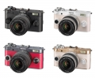
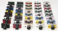

器材库 > APS及其以下画幅可换镜头数码相机 > PENTAX Q-S1

规格总览
产品类型
小型传感器可换镜头数码相机
发布日期
2014-08-05
厂家推荐价格
499.00 （美元）
影像规格
影像传感器
CMOS
影像传感器尺寸
1.7英寸
总像素
1275万
有效像素
1240万
最大解像度
4000x3000
静态图像格式
JPEG, RAW, 符合DCF（Design rule of Camera File system）2.0
静态图像质量
4000x3000
画幅比
3:2, 16:9, 1:1
短片尺寸
1920x1080, 16:9, 30fps
短片格式
MPEG4-AVC/H.264
防抖系统
SR防抖
除尘系统
“DR II”超声波抖动除尘
镜头和对焦
镜头卡口
Pentax Q
兼容镜头
Q卡口镜头
对焦点
脸部检测，跟踪，选择（25点），选择，重点
AF辅助灯
有
手动对焦
支持
曝光控制
测光模式
中央重点测光, 多分区评价测光, 点测光
测光范围
EV1至17EV
曝光模式
Auto, P（程序自动曝光）, B门, A（光圈优先自动曝光）, S（快门速度优先自动曝光）
拍摄模式
标准，人像，风景，微距，夜景人像，夜景，蓝天，森林
场景模式
夜景, 食物, 黄昏, 宠物, 夜景快照, 风景, 夜景HDR（JPG格式）
快门速度
1/2000 - 30秒
闪光同步速度
内置闪光灯1/2000秒、外置闪光灯1/250秒，电子快门：1/13秒秒
曝光补偿
±3EV以1/3EV级调整
ISO感光度
ISO 100 至12800，以1/3 EV 为步长调校； 高于 ISO 12800 时，感光度也可以约0.3、0.7 或1 EV（相当于ISO 25600）作定级递增；具备自动ISO 感光度控制
白平衡
日光, 白炽灯, 闪光灯, 阴天, 阴影, CTE, 手动白平衡, 荧光灯（日光白色）, 荧光灯（日光）, 荧光灯（暖白色）
连拍
5fps
闪光灯
内置闪光灯
弹出式
闪光指数
约4.9（ISO100/m）/ 约7 （ISO200/m）
闪光补偿
-2 至 +1EV
闪光同步模式
前帘同步, 后帘同步, 慢速同步, 防红眼同步
取景器/显示屏
LCD类型
彩色TFT LCD
LCD尺寸
3.0英寸
LCD像素
46万
视野率
视野：约100%，网格线显示（4x4网格，黄金分割，比例尺）%
Live View
有
文件输入/输出
存储卡
SD/SDHC, SDXC, Eye-Fi
数据接口
USB2.0
视频/音频接口
AV 输出, HDMI 输出
电源
电池
D-LI68
续航能力
约250张（半数使用闪光灯），约260张（闪光灯关闭）
机身规格
尺寸
105.0m(宽) x 58.0 (高) x 34 (厚) (不包含突出部分)mm
重量
约 203g (包含专用电池和SD存储卡)g
其它
软件
捆绑Digital Camera Utility 5
备注
具备36种可定制的配色方案
该产品暂无存档的网友点评
产品图 / 样片

评测 / 相关文章
- 详细内容 （存档）
- 玲珑小巧招人疼 宾得Q-S1无反相机评测 （存档）
- ［资讯］PENTAX QS-1 官方样片欣赏 （存档）
- ［资讯］小巧机身可爱颜色 宾得Q-S1相机定制服务 （存档）
- ［资讯］时尚设计+卓越操控 宾得发布Q-S1无反相机 （存档）